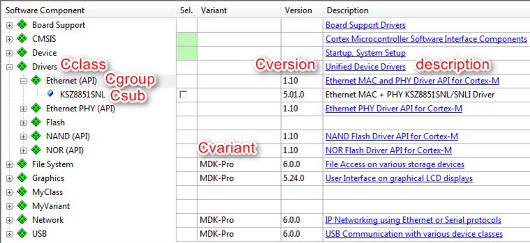
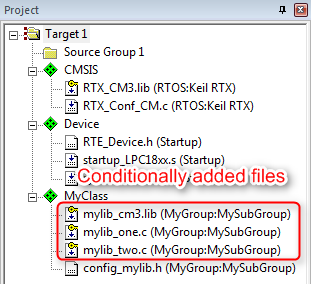
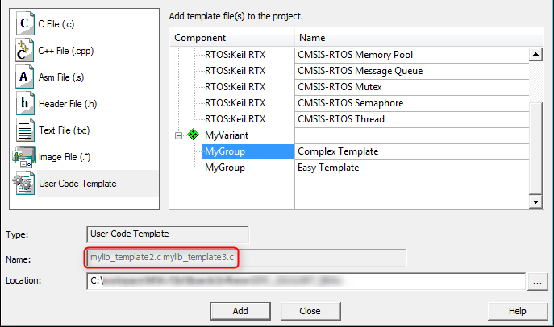

This section is a tutorial that explains how to create a Software Pack. Initially, a Software Pack with a simple PDSC file is created that contains only one software component. This Software Pack is then extended to show the various features for describing software components.
Preparations
- Create a working directory on you PC, for example C:\temp\working.
- Go to the directory \CMSIS\Pack\Tutorials available in the ARM::CMSIS Pack installation. Please consult your development tool's documentation for more information on the Pack installation directory structure. In a standard µVision installation, you will find it below C:\Keil_v5\ARM\Pack\ARM\CMSIS\version.
- Open the file Pack_with_Software_Components.zip.
- Copy the content of the ZIP file's 01_Create_PDSC directory into your working directory.
- Make sure that files/directories are not write protected (remove read-only flag).
- Copy from the directory \CMSIS\Utilities available in the ARM::CMSIS Pack installation the following files into your working directory:
Create PDSC File
-
Open the file vendor.pack_name.pdsc in an editor and change it like this:
<?xml version="1.0" encoding="UTF-8"?>
<package schemaVersion="1.4" xmlns:xs="http:
<vendor>MyVendor</vendor>
<name>MyPack</name>
<description>Internal Software Pack</description>
<url></url>
<supportContact></supportContact>
<license>Docs/license.txt</license>
- Note
- All code examples in this and the following sections can be found in the
snippets.xml file in the 01_Create_PDSC directory.
A PDSC file starts with information on the XML version and the encoding. The <package> element declares the version of the schema file and the XSD file that is used to validate the PDSC file (hence the copy of the PACK.xsd file into the working directory):
- <name> specifies the name of the Pack and must not contain spaces. Example:
MyPack and My_Pack are ok, My Pack is not ok.
- <description> describes the Pack in a few words
- <vendor> states the name of the Pack's vendor and must not contain spaces. Example:
ACMECorp and ACME_Corp are OK, ACME Corporation is not OK.
- <url> defines the download URL of the Pack (may be left empty)
- Note
-
- <supportContact> may provide an email address or web page URL for Pack specific questions/problems
- <license> links to an optional license file that will be shown during the installation of the Pack. The installation in development tools will abort if the license agreement is not accepted.
-
Add release information and keywords:
<releases>
<release version="1.0.0" date="2015-03-09">
Initial version
</release>
</releases>
<keywords>
<keyword>MyVendor</keyword>
<keyword>My Software Component</keyword>
</keywords>
The information from the <releases> section will be used for:
- Determining the Pack version (required for the file name of the Pack file)
- Display of release information
<keywords> may be used for better visibility for search engines.
-
Add a <components> section with the following:
<components>
<component Cclass="MyClass" Cgroup="MyGroup" Csub="MySubGroup" Cversion="1.0.0">
<description>MySWComp</description>
<files>
<file category="doc" name="Docs/MySWComp.htm"/>
<file category="header" name="MySWComp/header_mylib.h"/>
<file category="header" name="MySWComp/config/config_mylib.h" attr="config" version="1.0.0"/>
<file category="source" name="MySWComp/mylib_one.c"/>
<file category="source" name="MySWComp/mylib_two.c"/>
</files>
</component>
</components>
- Note
- If you are using a header file with the attribute config, save it in a separate directory from all other header files as in this example. Configuration files are copied into the project folder and are adopted specifically for that project but chances are that due to the include path search order of the compiler, the unmodified header file in the pack repository is found first and used by the compiler (creating unexpected results).
More information on <components> will be given in section Software Components. Save the file and close your editor. In the next section, the generation of a Pack will be explained in detail.
Generate a Pack
-
Rename the file vendor.pack_name.pdsc to MyVendor.MyPack.pdsc.
-
Open the batch file gen_pack.bat from your working directory in a text editor. Check if the following line of code reflects your setup:
"C:\Program Files\7-Zip\7z.exe" a %PackName% Files -tzip
-
Having saved gen_pack.bat, you can execute it either by double-clicking or by using the command line which is recommended to see the output of PackChk.exe (open a command window at the location of the files and enter
gen_pack.bat). The batch file will:
- Check the availability of the PDSC file
- Copy the PDSC file to the Files directory
- Run PackChk.exe on the Files directory
- Create a Pack file in the working directory. It will be called MyVendor.MyPack.1.0.0.pack.
-
Install the Pack by double-clicking it. Depending on the development software that is used, the display of the Pack contents may differ:

MyClass:MyGroup:MySubGroup shown in development tool
Software Components
A component lists the files that belong to it and that are relevant for a project. The component itself or each individual file may refer to a condition that must resolve to true; if it is false, the component or file is not applicable in the given context.
Each software components must have the following attributes that are used to identify the component:
- Component Class (
Cclass): examples are CMSIS, Device, File System
- Component Group (
Cgroup): examples are CMSIS:RTOS, Device:Startup, File System:CORE
- Component Version (
Cversion): the version number of the software component.
Optionally, a software component may have additional attributes:
- Component Sub-Group (
Csub): examples are CMSIS:RTOS:MyRTOS, Device:Driver USBD:Full-speed
- Component Variant (
Cvariant): a variant of the software component.
- Component Vendor (
Cvendor): the supplier of the software component.
The Cclass, Cgroup, Csub, Cvariant and Cversion attributes are used together with the vendor specified by the Pack to identify a component. A component vendor must ensure that the combination Cclass, Cgroup, Csub and Cversion is unique and not used by multiple components within the same Pack.
For a list of established Cclasses, refer to Software Component Cclasses.
In case multiple interdependent components (belonging to the same Cclass) form part of a solution, these can be grouped in a so called bundle.
Use the following syntax to reference to software components and APIs:
<Vendor>::<Cclass>:<Cgroup>:<Csub>
Examples:
- ::CMSIS:RTOS (API) - the CMSIS-RTOS API.
- ARM::CMSIS:DSP - the CMSIS-DSP Library.
- ::File System:Drive:NOR - the NOR Flash Drive of a file system.
Here is an example for the display of software components in a development tool:

Display of a software component in development tools
Software Component Files
Each software component consists of a certain number of files. Each file has at least the following attributes:
name: File path, file name, and file extension in the format path/name.extension. The file path is relative to the root directory of the Pack.category: Defines the purpose of the file. Select the predefined value as listed in the table File Categories.
Optionally, every file may have the following attributes:
attr: Defines the special use and handling of a file. Select a predefined value as defined in the table File Attributes.condition: Enter the identifier (attribute id) of a condition. The element is used if the condition resolves to true.select: Brief description and purpose of the file. The select attribute is required when attr is set to template or interface. When multiple template files of a component have the same select string, they are treated as a single selectable template. This way, multiple template or interface files can be bundled.src: Path information. The path is specified relative to the Pack Description File (PDSC).version: File-specific version information. This is used particularly for files copied into the project workspace. Before a file gets copied, a version check avoids unnecessary copy actions. If a file does not have a version, then the component version is used.
Conditions
A condition describes dependencies on:
- a specific device
- a certain processor
- tool attributes
- the presence of other components
Conditions are used to define AND/OR rules that make components conditional and therefore only available under certain circumstances, for example for specific devices or processors. Conditions are also used to express dependencies between software components.
Each condition has an id that is unique within the scope of a the PDSC file. An id can be referenced in the condition attribute of components, APIs, examples, files and other conditions. All attributes set in a accept, require, or deny element must resolve to true for the element to become true. A condition becomes true when:
- At least one accept element is true, AND
- all require elements are true, AND
- no deny element is true.
If a condition resolves to false during processing, the respective element will be ignored.
Let's modify the example from the Create PDSC File section by adding the requirement for a CMSIS-RTOS and libraries that are specific to a certain Cortex-M class core:
mylib_cm0.lib for use with a Cortex-M0 and Cortex-M0+ processormylib_cm3.lib for use with a Cortex-M3 processormylib_cm4.lib for use with a Cortex-M4 or Cortex-M7 processor
Copy the content of the 02_Conditions directory of the Pack_with_Software_Components.zip file to the Files directory in your working environment:
-
Add a <conditions> section with the following:
<conditions>
<condition id="ARM Compiler">
<require Tcompiler="ARMCC"/>
</condition>
<condition id="CM0">
<description>Cortex-M0 based device</description>
<require condition="ARM Compiler"/>
<accept Dcore="Cortex-M0"/>
<accept Dcore="Cortex-M0+"/>
</condition>
<condition id="CM3">
<description>Cortex-M3 based device</description>
<require condition="ARM Compiler"/>
<accept Dcore="Cortex-M3"/>
</condition>
<condition id="CM4_CM7">
<description>Cortex-M4 based device</description>
<require condition="ARM Compiler"/>
<accept Dcore="Cortex-M4"/>
<accept Dcore="Cortex-M7"/>
</condition>
<condition id="CMSIS Core with RTOS">
<description>CMSIS Core with RTOS for Cortex-M processor</description>
<accept condition="CM0"/>
<accept condition="CM3"/>
<accept condition="CM4_CM7"/>
<require Cclass="CMSIS" Cgroup="Core"/>
<require Cclass="CMSIS" Cgroup="RTOS"/>
</condition>
</conditions>
-
Change the first line of the already existing component by adding the condition and increasing the version number of the component:
<component Cclass="MyClass" Cgroup="MyGroup" Csub="MySubGroup" Cversion="1.0.1" condition="CMSIS Core with RTOS">
-
Add the following code to the already existing component:
<file category="library" condition="CM0" name="MySWComp/Lib/mylib_cm0.lib"/>
<file category="library" condition="CM3" name="MySWComp/Lib/mylib_cm3.lib"/>
<file category="library" condition="CM4_CM7" name="MySWComp/Lib/mylib_cm4.lib"/>
-
Add a new version number to the header of the PDSC file so that a Pack with a new version number will be created:
<release version="1.0.1">
Conditions added
</release>
-
Finally, save the PDSC file and regenerate the Pack file using the gen_pack.bat script. See Generate a Pack for further details. Afterwards, install the Pack in your development tool and observe the differences to version 1.0.0.

Display of conditionally added files for a Cortex-M3 device in development tools
- Note
- PackChk.exe will will now display an M362 warning:
WARNING M362: (Line 80)
Not all Component Dependencies for 'Cclass=MyClass, Cgroup=MyGroup, Csub=MySubGroup, Cversion=1.0.1, Capiversion=' can be resolved.
M502: RTE Model reports: #error 511: MyVendor::MyClass:MyGroup:MySubGroup : Additional software components required
M504: RTE Model reports: MISSING: -- require CMSIS:CORE
M504: RTE Model reports: MISSING: -- require CMSIS:RTOS
PackChk.exe <InFile.pdsc> -i <path to installed CMSIS pack>\ARM.CMSIS.pdsc
Variants
Software components may have variants, for example:
- Debug version with or release version without diagnostic output
- Long/short file names
- Fast/slow modes
Variants are mutually exclusive (only one variant can be chosen at a time). Cvariant is an optional part of the component ID. The variant specifier is a brief string (e.g. release, debug).
- Note
- Version management relies on variants to remain unchanged between versions.
The following example introduces a new component to the Pack in two variants: debug and release. Copy the content of the 03_Variants directory of the Pack_with_Software_Components.zip file to the Files directory in your working environment.
-
Add the following lines to the components section in your PDSC file:
<component Cclass="MyVariant" Cgroup="MyGroup" Cvariant="Release" Cversion="1.0.2" condition="CMSIS Core with RTOS">
<description>Release version of MyVariant</description>
<RTE_Components_h>
<!-- the following content goes into file 'RTE_Components.h' -->
#define RTE_MyVariant_Release
</RTE_Components_h>
<files>
<file category="doc" name="Docs/MySWComp.htm"/>
<file category="header" name="MySWComp/header_mylib.h"/>
<file category="header" name="MySWComp/config/config_mylib.h" attr="config" version="1.0.0"/>
<file category="source" name="MySWComp/mylib_one.c"/>
<file category="source" name="MySWComp/mylib_two.c"/>
<file category="library" condition="CM0" name="MySWComp/Lib/mylib_cm0.lib"/>
<file category="library" condition="CM3" name="MySWComp/Lib/mylib_cm3.lib"/>
<file category="library" condition="CM4_CM7" name="MySWComp/Lib/mylib_cm4.lib"/>
</files>
</component>
<component Cclass="MyVariant" Cgroup="MyGroup" Cvariant="Debug" Cversion="1.0.2" condition="CMSIS Core with RTOS">
<description>Debug version of MyVariant</description>
<RTE_Components_h>
<!-- the following content goes into file 'RTE_Components.h' -->
#define RTE_MyVariant_Debug
</RTE_Components_h>
<files>
<file category="doc" name="Docs/MySWComp.htm"/>
<file category="header" name="MySWComp/header_mylib.h"/>
<file category="header" name="MySWComp/config/debug_config_mylib.h" attr="config" version="1.0.0"/>
<file category="source" name="MySWComp/debug_mylib_one.c"/>
<file category="source" name="MySWComp/debug_mylib_two.c"/>
<file category="library" condition="CM0" name="MySWComp/Lib/debug_mylib_cm0.lib"/>
<file category="library" condition="CM3" name="MySWComp/Lib/debug_mylib_cm3.lib"/>
<file category="library" condition="CM4_CM7" name="MySWComp/Lib/debug_mylib_cm4.lib"/>
</files>
</component>
-
Add a new revision to reflect the changes in a newly generated Pack:
<release version="1.0.2">
Variants introduced
</release>
-
Finally, save the PDSC file and regenerate the Pack file using the gen_pack.bat script. See Generate a Pack for further details. Afterwards, install the Pack in your development tool and observe the differences to version 1.0.1.

Display of MyVariant in development tools
RTE_Components.h
Sometimes, software components need to know of other components. Depending on the availability or configuration of another component, certain settings may be required. A distinct header file is available to make components aware of each other: RTE_Components.h. To add a line of C code to this header file, simply add this to your component:
<RTE_Components_h>
#define RTE_MyVariant_Debug /* MyVariant Debug Version */
</RTE_Components_h>
The #define can be checked by other components in a project.
- Note
- The RTE_components.h file needs to be included somewhere in your source files. Refer to RTE_Components.h for more information.
Bundles
A bundle is basically a variant on the Cclass level. It specifies the attributes Cclass, Cversion and optionally Cgroup and Cvendor for a collection of interdependent components. Components within a bundle inherit the attributes set by the bundle and must not set these attributes again. Bundles ensure consistency of attributes across multiple interworking components and restrict the mix and match of components within a Cclass from different solutions. In addition to components, a bundle has the mandatory elements description and doc (for documentation).
An example of a bundle is shown in the Create a BSP Bundle section where the bundle is used to deliver board support files for a certain development platform.
Instances
Some software components allow several instances. This is useful if more than one peripheral can be connected.
-
Adding the information about a maximum number of instances is easy. Change the first component (::MyClass:MyGroup:MySub) as follows:
<component Cclass="MyClass" Cgroup="MyGroup" Csub="MySubGroup" Cversion="1.0.3" condition="CMSIS Core with RTOS" maxInstances="3">
-
Add a new version number:
<release version="1.0.3">
Maximum number of instances specified
</release>
-
Finally, save the PDSC file and regenerate the Pack file using the gen_pack.bat script. See Generate a Pack for further details. Afterwards, install the Pack in your development tool and observe the differences to version 1.0.2. When selecting a certain number of instances of the component, causes the development tool to copy the required configuration files multiple times into the project. This ensures that each component instance can be configured separately.

Display of component instances in development tools
API Interface
An API is a special form of a software component that only defines a C/C++ Application Programming Interface (API). An API does not contain the actual implementation (usually provided by source code or library files) and cannot be selected in a development tool. One example is the CMSIS-RTOS API, which is specified as part of CMSIS. However, the actual RTOS implementation is provided by different vendors. An API consists of a name, a brief description as well as one or more header files, and a document containing a detailed specification of the API.
Copy the content of the 05_APIs directory of the Pack_with_Software_Components.zip file to the Files directory in your working environment:
-
Add a <apis> section with the following:
<api Cclass="Device" Cgroup="MyAPI" exclusive="0">
<description>API for MyAPI</description>
<files>
<file category="doc" name="Docs/API/MyAPI.htm"/>
<file category="header" name="API/Include/MyAPI.h"/>
</files>
</api>
-
Add a new version number:
<release version="1.0.4">
MyAPI added
</release>
-
Finally, save the PDSC file and regenerate the Pack file using the gen_pack.bat script. See Generate a Pack for further details. Afterwards, install the Pack in your development tool and observe the differences to version 1.0.3. Most likely, you will see none as APIs are not selectable and are thus not displayed in the tools.
User Code Templates
User code templates provide a quick start for implementing an application. To add user code templates, add source files with the attribute attr=“template” in a <component>. The select attribute is used to identify template files. Template files with the same select attribute will be added to a project simultaneously.
Copy the content of the 06_User_Code_Templates directory of the Pack_with_Software_Components.zip file to the Files directory in your working environment:
-
Add the following code to both variants (
debug and release) of the ::MyVariant:MyGroup component: <file category="source" name="MySWComp/Templates/mylib_template1.c" attr="template" select="Easy Template"/>
<file category="source" name="MySWComp/Templates/mylib_template2.c" attr="template" select="Complex Template"/>
<file category="source" name="MySWComp/Templates/mylib_template3.c" attr="template" select="Complex Template"/>
-
Add a new version number:
<release version="1.0.5">
User Code Templates added
</release>
-
Finally, save the PDSC file and regenerate the Pack file using the gen_pack.bat script. See Generate a Pack for further details. Afterwards, install the Pack in your development tool and observe the differences to version 1.0.4.

Display of user code templates in development tools
Example Projects
Example projects help to understand a certain MCU or development board better. An example and each individual file of it may refer to a condition that must resolve to true; if it is false, the example or file will be ignored. The board element is used to reference to one or more board descriptions using the board vendor and name an example is targeted for. Each example can specify attributes listing related components using Cclass, Cgroup, Csub and Cversion. The <project> element contains the names of the supported development tools and the project files to be loaded.
Copy the content of the 07_Example_Projects directory of the Pack_with_Software_Components.zip file to the Files directory in your working environment:
-
Add an <examples> section with the following:
<examples>
<example name="MyDevBoard Example" doc="Abstract.txt" folder="MyPackExample">
<description>CMSIS-RTOS based example</description>
<board name="MyDevBoard" vendor="MyVendor"/>
<project>
<environment name="uv" load="MyPackExample.uvprojx"/>
</project>
<attributes>
<component Cclass="CMSIS" Cgroup="Core"/>
<component Cclass="Device" Cgroup="Startup"/>
<component Cclass="CMSIS" Cgroup="RTOS"/>
<component Cclass="MyVariant" Cgroup="MyGroup"/>
</attributes>
</example>
</examples>
-
Add a new version number:
<release version="1.0.6">
Example project added
</release>
-
Finally, save the PDSC file and regenerate the Pack file using the gen_pack.bat script. See Generate a Pack for further details. Afterwards, install the Pack in your development tool and observe the differences to version 1.0.5.

Display of example projects in development tools
Example projects rely on a development board to be present (as the code needs to run on real hardware). In the code above you will notice that a development board called "MyDevBoard" was specified. Pack with Board Support explains how to integrate boards into a Pack.